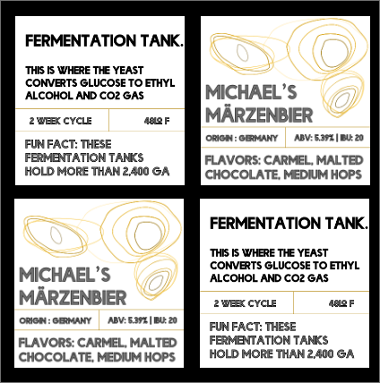

VR Problem
Many people live in areas where there aren’t many opportunities to buy fresh fruits and vegetables. As a volunteer at my community garden, I’ve loved teaching people how to grow food in their own backyard. Growing food for people seems an incredibly difficult task and often times intimidating for those new to gardening. I knew that teaching gardening skills would benefit people in a few different ways but mainly to teach without any repercussions of failure or losing time and money in the process. A VR application that teaches gardening skills would be meaningful for teaching people how to grow food.
Design Process
Where we started
My team’s first step for both AR and VR was to ideate how we may approach our chosen problem. We started with sketching to consider different interactions and as a tool to discuss with one another.
In terms of a physical prototype- we used clay models of the objects in our scene and set it as a first person experience as most VR applications are. After nailing down the interactions you can view in the gif below. This helped us understand positioning and interaction opportunities.

Digital Tool choice
In choosing my tool, I wanted a tool that was adaptable and did not intimidate me as a designer. I initially attempted to work within the constraints of unity because my development skills were a bit rusty but found the program slow and strenuous to use on my computer. I differed to my second choice, A-Frame. This was my first time using the program, I initially used glitch to write my code and run it in VR on my google cardboard headset which turned out to be a great workflow for me. You can see the gif below for an example on what my first iteration looked like:

I learned about AFRAME as a tool and how to place 3D assets in a scene which proved difficult because they were all created in various sizings and automatic positioning. The placement and interaction of the water jug and pitchfork was an uphill battle but ended up in our final design.
Final VR Prototype
Our ultimate solution includes an interaction for tilling soil, watering the soil, and picking the fruits of our digitally grown labor. There are gaze interactions and click interactions involved throughout the solution. Anything that can be interacted with will get larger if gazed at to signify interaction. There’s additionally lighting and sound that provides users with a deeper sense of immersion.
Further Exploration
If we had more time with this prototype, I would’ve loved the opportunity to work on informational pop ups and audio. Although there is scenery audio for immersion purposes, there is definitely a lack of education and teaching users how to actually garden.
AR Problem
A problem for education and learning about items and objects in the real world would be best set up in an AR application. Brewery experience's are fun, but could be improved significantly with a bit more information on the brewing process and beers themselves. When deciding on a problem, my team set out to approach the lack of interaction and information one gets at a smaller scar brewery. An AR application to support the experience of learning about the origins and process of beer making could make a good brewery experience - great.
Design Process
Where we started
My team’s first step for this VR design process was to ideate how we may approach our chosen problem in terms of a physical prototype- we used clay models of the objects in our scene and set it as a first person experience as most AR applications are. We were very interested originally in showing what certain machineries do on the floor of the brewery including pipes and tanks. After nailing down the interactions, which you can see below, we needed to move onto prototyping In AR.
.gif)
Tool Choice
After my previous experience with A-FRAME, I felt comfortable using that in conjunction with the AR.js library which would allow me to prototype and rapidly iterate on a marker based AR experience within a brewery context.
I also wanted to challenge myself and used Hiro markers that I created and trained to initiate the AR experience. I designed the markers to make sense in context and look aesthetically pleasing enough to exist on a brewery floor or bottle of beer.
Final AR Prototype
My ultimate solution included informational blocks that would mask the marker. I built out two different interactions - scanning a marker for machinery information as well as scanning a beer for information on flavors and origins. Each of these markers was trained and can be used with a phone camera or on the glitch site via a webcam. I found training the markers to be the easiest aspect of the development in this application.
The most difficult part was choosing which information was most interesting and most applicable for viewers and brewery- goers. The blocks to the right are the information that wraps the 3D cube in the AR experience.

Further Exploration
If I could re-do the section on AR and gave myself more time with the prototype, I would’ve loved the opportunity to work on markers with Vufioria. I think beer cans are art work in and of themselves and the Hiro markers I used with AR.JS don’t do them justice. Vuforia would allow for more creative freedom and creative positioning of the markers.
.gif)